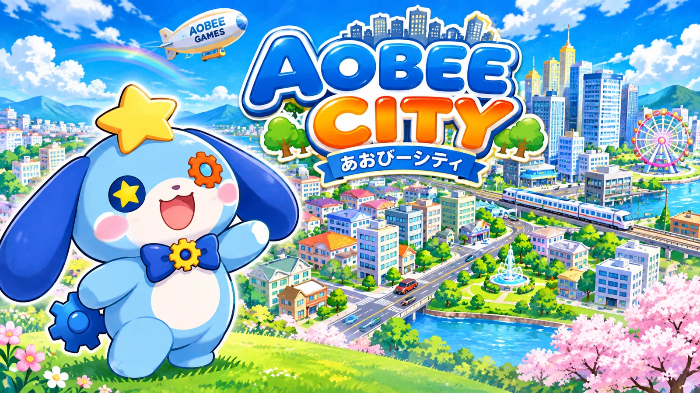

<!doctype html><html lang="ja"><meta charset="utf-8"><meta name="viewport" content="width=device-width,initial-scale=1"><title>AOBEE CITY v2.9.3.1</title><style>*{box-sizing:border-box}body{margin:0;background:#203542;color:white;font:14px system-ui}header,footer{display:flex;flex-wrap:wrap;gap:5px;padding:7px;align-items:center}button,select{background:#38586b;color:white;border:1px solid #829da9;border-radius:5px;padding:9px}button.on{background:#e5b34d;color:#182b36}main{display:flex;height:calc(100dvh - 170px);min-height:180px}canvas{flex:1;width:0;min-width:0;height:100%;touch-action:none}aside{width:130px;padding:8px;background:#294554;overflow:auto}meter{width:100%}@media(max-width:600px){aside{width:100px;font-size:11px}button{padding:6px;font-size:12px}main{height:calc(100dvh - 200px)}}body{height:100dvh;display:flex;flex-direction:column;overflow:hidden}header,footer{flex-shrink:0}main{flex:1;height:auto!important;min-height:0}aside{width:170px}#tools{flex-wrap:nowrap;overflow-x:auto;max-height:none}#tools button{white-space:nowrap;flex-shrink:0}#categories{background:#172e3b;padding:4px 7px}#categories button{padding:6px 10px}button:disabled{opacity:.45}header b{color:#ffe29b}#stats{font-variant-numeric:tabular-nums}body.hide-panel aside{display:none}@media(max-width:600px){aside{width:112px}header{gap:3px}header button{padding:5px}#stats{flex-basis:100%}}@media(max-height:450px){header,footer{padding:3px}button{padding:4px 7px}aside{font-size:11px}} #titleScreen{position:fixed;inset:0;z-index:100;background:#13253e;display:grid;place-items:center;overflow:hidden;color:#fff;font-family:system-ui}#titleScreen[hidden]{display:none}#skyline{position:absolute;inset:0;width:100%;height:100%}#titleMenu{position:relative;text-align:center;width:min(90%,440px);max-height:96dvh;overflow:auto;padding:18px;box-sizing:border-box;background:linear-gradient(135deg,#142b45d9,#182a3db0);border:1px solid #ffe4a677;border-radius:18px;box-shadow:0 15px 70px #0008}#titleMenu h1{font-size:clamp(32px,8vw,68px);line-height:.95;letter-spacing:.045em;margin:12px 0;color:#ffe3a0;text-shadow:0 3px #a87535,0 6px 18px #000}#titleMenu button{display:block;width:100%;margin:7px 0;padding:10px;background:#294963;color:#fff;border:1px solid #8fa6ba;border-radius:7px;font-weight:bold}#titleMenu button:first-of-type{background:#e9c47b;color:#23374a}#titleMenu small{color:#c9d9e6;letter-spacing:.12em}@media(max-height:450px){#titleMenu{padding:8px;max-width:360px}#titleMenu h1{font-size:36px;margin:5px}#titleMenu button{padding:5px;margin:4px}} #titleScreen{place-items:center start}#titleMenu{margin-left:5vw;width:min(38vw,390px);background:linear-gradient(90deg,#10283ef5,#10283ec9);border:0;border-left:3px solid #f5d38b;border-radius:0 16px 16px 0;text-align:left;padding:22px}#titleMenu h1{font-size:clamp(35px,6vw,82px);font-style:italic;letter-spacing:-.04em}#titleMenu button{text-align:left;padding-left:18px}#titleMenu small{letter-spacing:.06em}@media(orientation:portrait){#titleScreen{place-items:end center}#titleMenu{margin:0 0 3vh;width:90%;padding:12px}#titleMenu h1{font-size:46px}#titleMenu h1 br{display:none}} #titleScreen.art-ready{background:#10283d url('aobee_city_title.webp') center center/contain no-repeat;place-items:end end}#titleScreen.art-ready #skyline{visibility:hidden}#titleScreen.art-ready #titleMenu{margin:12px;width:min(260px,42vw);padding:12px;background:rgba(13,38,58,.88);border:1px solid #f6d480;border-radius:14px;max-height:95%;overflow:auto}#titleScreen.art-ready #titleMenu h1,#titleScreen.art-ready #titleMenu p,#titleScreen.art-ready #titleMenu>small:first-child{display:none}@media(max-width:600px) and (orientation:portrait){#titleScreen.art-ready{background-position:center 12%;background-size:100% auto;place-items:end center}#titleScreen.art-ready #titleMenu{width:90%;margin:8px;max-height:55%}}#scenarioCards{display:grid;grid-template-columns:repeat(auto-fit,minmax(145px,1fr));gap:8px}#scenarioCards button{text-align:left;white-space:normal;min-height:58px;padding:10px;border:1px solid #547b99;background:#23465f;color:white;border-radius:8px}#scenarioCards button.on{border:2px solid #ffd77c;background:#365a70}#scenarioDetail{padding:14px 0;line-height:1.6}#scenarioStart{width:100%;padding:12px;background:#f6d17b;color:#172c3b;font-weight:bold}#scenarioScreen::backdrop{background:#071522b8}.endScreen{width:min(94vw,800px);max-height:94dvh;padding:0;background:#132b40;color:#fff;border:1px solid #e8cb82;border-radius:16px;overflow:auto;text-align:center}.endScreen::backdrop{background:#050d19e8}#endScene{position:relative;overflow:hidden;background:#193b58}#endCanvas{width:100%;display:block}#endKicker,#endingName{position:absolute;left:0;right:0;text-shadow:0 2px 5px #000;margin:0}#endKicker{top:12px;letter-spacing:.15em;font-size:12px}#endingName{bottom:12px;font-size:clamp(20px,4vw,36px)}#endBody{padding:16px}#endingStats{display:grid;grid-template-columns:repeat(2,1fr);gap:8px}#endingStats div{background:#24465c;padding:8px;border-radius:8px}#endNext{min-width:160px;background:#f6d17b;color:#172c3b;margin:12px}#endActions[hidden],#endNext[hidden]{display:none}#endCanvas[hidden],#endingIllustration[hidden],#scenarioPreview[hidden],#scenarioIllustration[hidden]{display:none!important}</style><header><b>★ AOBEE CITY v2.9.3.1</b><span id="stats"></span><button onclick="newCity()">新規都市</button><button onclick="audioSettings()">音設定</button><button onclick="exportCity()">書出</button><button onclick="$('importFile').click()">取込</button><input hidden type="file" id="importFile" accept=".json,application/json"><button onclick="speed=0">停止</button><button onclick="speed=1">▶</button><button onclick="speed=4">▶▶</button><button onclick="save()">保存</button><button onclick="load()">読込</button></header><main><canvas id="c"></canvas><aside>都市需要<div id="demand"></div><p id="power"></p><p id="jobs"></p>税率 <select id="tax"><option>5</option><option selected>9</option><option>12</option><option>15</option></select>%<p id="msg"></p><p id="metrics"></p><p id="event"></p><p id="goal"></p><label><input id="disasters" type="checkbox" checked>災害</label><button onclick="consult()">秘書に相談</button><button onclick="openStats()">都市統計・市民の声</button><button onclick="borrow()">融資</button><select id="overlay"><option value="">通常</option><option value="traffic">交通</option><option value="pollution">公害</option><option value="happy">幸福</option><option value="water">水道</option><option value="land">土地評価</option></select></aside></main><footer id="categories"></footer><footer id="tools"></footer><footer><button id="batchToggle" onclick="batchMode=!batchMode;this.textContent=batchMode?'範囲：ON':'範囲：OFF'">範囲：ON</button><button onclick="openMap()">全体マップ</button><button onclick="zoom(1.25)">拡大＋</button><button onclick="zoom(.8)">縮小－</button><button onclick="ox=0;oy=0">原点</button><button onclick="document.body.classList.toggle('hide-panel')">情報表示切替</button><span id="info"></span></footer><dialog id="audioDialog" style="background:#18364b;color:white;border-radius:12px"><h2>サウンド設定</h2><button data-bgm onclick="toggleMusic(this)">♪ BGM：OFF</button><p><label><input id="soundCheck" type="checkbox" onchange="saveAudio()">効果音</label></p><p><label>音量 <input id="volumeSlider" type="range" min="0" max="100" value="50" oninput="saveAudio()"></label></p><button onclick="$('audioDialog').close()">閉じる</button></dialog><dialog id="miniDialog" style="width:min(90vw,460px);background:#18364b;color:white;border-radius:12px"><h2>都市全体マップ</h2><p>タップした場所へ移動します。</p><canvas id="miniMap" width="320" height="320" style="width:min(100%,320px);display:block;margin:auto;touch-action:none"></canvas><button onclick="$('miniDialog').close()">閉じる</button></dialog><dialog id="cityStats" style="width:min(94vw,760px);max-height:90dvh;background:#18364b;color:white;border:1px solid #91b7d3;border-radius:14px;overflow:auto"><h2>都市統計</h2><div id="statSummary"></div><label>推移 <select id="statMetric" onchange="renderStats()"><option value="pop">人口</option><option value="cash">資金</option><option value="net">月間収支</option><option value="happy">幸福度</option><option value="land">土地評価</option></select></label><canvas id="statChart" width="640" height="220" style="width:100%;background:#10283b;border-radius:8px"></canvas><h3>市民の声</h3><div id="citizenVoices"></div><button onclick="$('cityStats').close()">閉じる</button></dialog><dialog id="advisor" style="background:#294554;color:white;border:1px solid #9bb5c0;border-radius:10px;width:min(92vw,480px);max-height:85dvh;overflow:auto"><h2>★ 市長秘書室</h2><p id="adviceSummary"></p><select onchange="adviceFocus=this.value;renderAdvice()"><option value="all">総合診断</option><option value="finance">財政</option><option value="growth">人口・産業</option><option value="traffic">交通</option><option value="life">生活環境</option><option value="tourism">観光</option></select><div id="adviceList"></div><button onclick="$('advisor').close()">閉じる</button></dialog><dialog id="ending" class="endScreen"><div id="endScene"><canvas id="endCanvas" width="800" height="320"></canvas><div id="endKicker">AOBEE CITY • SCENARIO CLEAR</div><h1 id="endingName"></h1></div><section id="endBody"><h2 id="endChapter"></h2><p id="endingStory"></p><div id="endingStats"></div><h2 id="endingGrand"></h2><button id="endNext" onclick="advanceEnding()">次へ</button><div id="endActions" hidden><button onclick="leaveEnding(false)">自由開発へ</button><button onclick="leaveEnding(true)">タイトルへ</button></div></section></dialog><dialog id="policyDialog" style="width:min(92vw,520px);background:#24465a;color:white;border:2px solid #efcc79;border-radius:16px;padding:22px"><small>市長秘書室 ／ 政策判断</small><h2 id="policyName"></h2><p id="policyStory"></p><p id="policyAdvice" style="color:#ffe29b"></p><div id="policyChoices" style="display:grid;gap:8px"></div></dialog><dialog id="scenarioScreen" style="width:min(94vw,900px);max-height:92dvh;background:#142d43;color:white;border:1px solid #91b7d3;border-radius:16px;padding:16px"><header style="display:flex;justify-content:space-between;align-items:center"><h2>シナリオ選択</h2><button onclick="$('scenarioScreen').close()">戻る</button></header><div id="scenarioProgress" style="margin:8px 0;color:#f6d17b"></div><div id="scenarioCards"></div><canvas id="scenarioPreview" width="800" height="320" style="width:100%;max-height:180px;object-fit:cover;border-radius:8px"></canvas><section id="scenarioDetail" aria-live="polite"></section><button id="scenarioStart" onclick="beginScenario()">このシナリオを開始</button></dialog><section id="titleScreen"><canvas id="skyline"></canvas><div id="titleMenu"><small>★ AOBEE GAMES PRESENTS ★</small><h1>AOBEE<br>CITY</h1><p>あおびーシティ<br><small>小さな一歩から、星に届く街へ。</small></p><button onclick="startCity('new')">新しい街をつくる</button><button id="continueCity" onclick="startCity('load')">続きから</button><button onclick="openScenarios()">シナリオモード</button><button onclick="startCity('sandbox')">資金無制限モード</button><button data-bgm onclick="toggleMusic(this)">♪ BGM：OFF</button><small> CITY BUILDING SIMULATION · v2.9.3.1</small></div></section><script>
const N=64,$=id=>document.getElementById(id),C=$('c'),g=C.getContext('2d');let grid=Array.from({length:N*N},(_,i)=>({t:Math.sin(i%N*.22)+Math.cos((i/N|0)*.13)>1.55?'tree':'grass',l:0})),cash=20000,month=0,speed=1,tool='road',s=28,ox=0,oy=0,pop=0,jobs=0,cap=0,need=0,dem=[.7,.5,.7],net=0;const defs={move:['移動',0],road:['道路',20],r:['住宅',40],c:['商業',60],i:['工業',60],plant:['発電所',1200],park:['公園',100],water:['給水塔',700],police:['警察',450],fire:['消防',450],school:['学校',550],hospital:['病院',800],rail:['鉄道',80],station:['駅',600],leisure:['娯楽',500],aquarium:['水族館',1800],museum:['星の神殿記念館',2500],golf:['ゴルフ場',2200],clear:['撤去',10]};for(const [k,v] of Object.entries(defs)){let b=document.createElement('button');b.textContent=v[0]+(v[1]?' $'+v[1]:'');b.onclick=()=>{tool=k;document.querySelectorAll('#tools button').forEach(x=>x.classList.remove('on'));b.classList.add('on')};$('tools').append(b);if(k===tool)b.classList.add('on')}
const categories={'基本':['move','road','clear'],'地区':['r','c','i'],'インフラ':['plant','water','rail','station'],'公共':['park','police','fire','school','hospital'],'観光':['leisure','aquarium','museum','golf']};let category='基本';const toolButtons=[...document.querySelectorAll('#tools button')];function showCategory(k){category=k;toolButtons.forEach((b,i)=>b.hidden=!categories[k].includes(Object.keys(defs)[i]));document.querySelectorAll('#categories button').forEach(b=>b.classList.toggle('on',b.textContent===k))}for(let k of Object.keys(categories)){let b=document.createElement('button');b.textContent=k;b.onclick=()=>showCategory(k);$('categories').append(b)}showCategory(category);function selectTool(k){let group=Object.keys(categories).find(c=>categories[c].includes(k));if(group)showCategory(group);toolButtons[Object.keys(defs).indexOf(k)].click()}
function neighbors(i){let x=i%N,y=i/N|0;return [x>0?i-1:-1,x<N-1?i+1:-1,y>0?i-N:-1,y<N-1?i+N:-1].filter(x=>x>=0)}
function recalc(){pop=jobs=cap=need=0;let cj=0;for(let a of grid){if(a.t==='r')pop+=a.l*12;if(a.t==='c'){jobs+=a.l*8;cj+=a.l*8}if(a.t==='i')jobs+=a.l*15;if(a.t==='plant')cap+=240;if(['r','c','i'].includes(a.t))need+=a.l*2+1}dem=[Math.max(.08,Math.min(1,(jobs+35-pop*.55)/80)),Math.max(.05,Math.min(1,(pop*.35-cj+20)/70)),Math.max(.08,Math.min(1,(pop*.65-jobs+45)/90))]}
function tick(){recalc();analyze();let powered=new Set(),q=[];grid.forEach((a,i)=>{if(a.t==='plant'){powered.add(i);q.push(i)}});for(let j=0;j<q.length;j++)for(let n of neighbors(q[j]))if(!powered.has(n)&&['road','plant'].includes(grid[n].t)){powered.add(n);q.push(n)}let order=Array.from({length:grid.length},(_,i)=>i);for(let j=order.length-1;j>0;j--){let k=Math.random()*(j+1)|0;[order[j],order[k]]=[order[k],order[j]]}for(let i of order){let a=grid[i],k=['r','c','i'].indexOf(a.t);if(k<0)continue;let ok=neighbors(i).some(n=>grid[n].t==='road'&&powered.has(n));if(ok&&(a.t!=='r'||pop<120||local[i].water>0)&&need+2<=cap&&a.l<3&&Math.random()<dem[k]*.35*(.3+local[i].happy/100)*(a.t==='i'?1:.75+local[i].land/200)*(1-Number($('tax').value)/25)){a.l++;need+=2}else if((!ok||need>cap||local[i].happy<30||Number($('tax').value)>13)&&a.l&&Math.random()<.13){a.l--;need-=2}}recalc();net=Math.round((pop*1.5+jobs*2)*Number($('tax').value)/9-grid.filter(a=>a.t==='road').length*.5-grid.filter(a=>a.t==='plant').length*45-grid.filter(a=>a.t==='park').length*3);net+=tourism-cost-Math.ceil(debt*.006)+effectSum('income');if(debt&&net>0&&cash+net>1000){let p=Math.min(debt,Math.max(0,Math.floor(Math.max(0,net)*.5)),Math.max(0,cash+net-1000));debt-=p;net-=p}if(mode!=='sandbox')cash+=net;month++;effects=effects.filter(e=>--e.months>0);events();recalc();analyze();recordMonth();checkGoal();if(!won&&speed!==0)offerPolicy();ui()}
function ui(){analyze();toolButtons.forEach((b,i)=>{let k=Object.keys(defs)[i];b.title=unlocks[k]&&pop<unlocks[k]&&mode!=='sandbox'?'人口 '+unlocks[k]+' 人で解禁':defs[k][0];b.disabled=mode!=='sandbox'&&((unlocks[k]||0)>pop||defs[k][1]>cash)});$('info').title='道路と発電所を接続し、住宅・商業・工業を道路沿いに配置してください。';$('goal').textContent=scenarios[mode]?(won?'目標達成！':scenarios[mode].goal+(mode==='traffic'?' ／ 維持 '+goalStreak+'/12月':'')+' ／ 残り'+Math.max(0,scenarios[mode].limit-month)+'か月'):mode==='sandbox'?'資金無制限':mode==='growth'?(won?'目標達成！':'目標：60か月以内に人口500人 '+pop+'/500'):mode==='recovery'?(won?'目標達成！':'目標：36か月以内に資金$10000・月間黒字'):'';$('metrics').textContent='幸福 '+happy+'%｜観光収入 $'+tourism+'｜借入 $'+debt+'｜'+rank();$('event').textContent=eventLog+(effects.length?' ｜ 政策：'+effects.map(e=>e.name+' 残'+e.months+'月').join('・'):'');$('stats').textContent='人口 '+pop+' ｜ $'+Math.floor(cash).toLocaleString()+' ｜ '+(1+(month/12|0))+'年'+(month%12+1)+'月 ｜ 月収 '+net;$('demand').innerHTML=dem.map((v,i)=>['住宅','商業','工業'][i]+'<meter min="0" max="1" value="'+v+'"></meter>').join('');$('power').textContent='電力 '+need+'/'+cap;$('jobs').textContent='雇用 '+jobs;$('msg').textContent=cap===0?'発電所を道路につなごう！':need>=cap?'電力不足！':jobs<pop*.4?'仕事を増やそう！':net<0?'財政が赤字だよ！':'街を育てよう！'}
function draw(){if(titleOpen){requestAnimationFrame(draw);return}let w=C.clientWidth,h=C.clientHeight;if(C.width!==w||C.height!==h){C.width=w;C.height=h}g.imageSmoothingEnabled=false;g.fillStyle='#19343c';g.fillRect(0,0,w,h);for(let y=Math.max(0,Math.floor(-oy/s));y<Math.min(N,(h-oy)/s);y++)for(let x=Math.max(0,Math.floor(-ox/s));x<Math.min(N,(w-ox)/s);x++){let i=y*N+x,a=grid[i],X=Math.floor(ox+x*s),Y=Math.floor(oy+y*s),seed=(i*7919)%97;function rect(c,x,y,w,h){g.fillStyle=c;g.fillRect(Math.floor(X+x*s),Math.floor(Y+y*s),Math.ceil(w*s),Math.ceil(h*s))}function poly(c,pts){g.fillStyle=c;g.beginPath();pts.forEach(([x,y],i)=>i?g.lineTo(X+x*s,Y+y*s):g.moveTo(X+x*s,Y+y*s));g.closePath();g.fill()}function tree(x,y,z){rect('#526d3d',x+.1*z,y+.68*z,.85*z,.2*z);rect('#77533b',x+.42*z,y+.48*z,.15*z,.42*z);poly('#24583b',[[x,y+.58*z],[x+.48*z,y],[x+z,y+.58*z],[x+.7*z,y+.78*z],[x+.2*z,y+.78*z]]);poly('#55964d',[[x+.12*z,y+.48*z],[x+.48*z,y+.04*z],[x+.63*z,y+.48*z],[x+.35*z,y+.63*z]])}function building(x,y,w,h,wall,roof,floors){rect('#263c3b44',x+.1,y+.13,w,h);rect(wall,x,y,w,h);rect('#263c3b55',x+w*.8,y,w*.2,h);poly(roof,[[x-.03,y],[x+w*.15,y-.13],[x+w*.86,y-.13],[x+w+.03,y],[x+w*.8,y+.09],[x+w*.12,y+.09]]);for(let f=0;f<floors;f++)for(let k=0;k<2;k++){rect('#294b5b',x+w*(.14+k*.35),y+.14+f*.13,w*.22,.09);rect('#b8e1db',x+w*(.14+k*.35),y+.14+f*.13,w*.08,.04)}rect('#694b3d',x+w*.43,y+h-.13,w*.15,.13)}
rect(['#88ad62','#8eb568','#85a95f'][seed%3],0,0,1,1);if(s>=18){for(let k=0;k<5;k++){let px=((seed*13+k*29)%91)/100,py=((seed*7+k*37)%91)/100;rect(k%2?'#a7c77a':'#729951',px,py,.045,.025)}}rect('#b6cb793b',.12,.15,.12,.05);rect('#537e4a44',.73,.79,.12,.05);
if(a.t==='tree'){tree(.06,.14,.63);tree(.42,.36,.5)}
if(a.t==='park'){rect('#b7a77b',.43,0,.14,1);rect('#b7a77b',0,.45,1,.13);tree(.04,.04,.38);tree(.58,.54,.36);rect('#67b9cc',.61,.08,.27,.26);rect('#d6d0ae',.08,.71,.24,.07)}
if(a.t==='road'||a.t==='rail'){let rail=a.t==='rail',linked=neighbors(i).filter(j=>rail?['rail','station'].includes(grid[j].t):grid[j].t==='road');let base=rail?'#8e7863':'#5c6770';rect(base,.24,.24,.52,.52);for(let j of linked){let dx=j%N-x,dy=(j/N|0)-y;rect(base,dx<0?0:dx>0?.5:.24,dy<0?0:dy>0?.5:.24,dx?.5:.52,dy?.5:.52);if(rail){for(let k of [.33,.63])rect('#c6c9c7',dx<0?0:dx>0?.5:k,dy<0?0:dy>0?.5:k,dx?.5:.045,dy?.5:.045)}else{rect('#e5d5a0',dx<0?.08:dx>0?.67:.48,dy<0?.08:dy>0?.67:.48,dx?.24:.035,dy?.24:.035)}}if(linked.length&&s>=14){let t=(Date.now()/(rail?1100:1600)+i*.17)%1,dir=linked[seed%linked.length],dx=dir%N-x,dy=(dir/N|0)-y;if(rail?seed%5===0:seed%3===0||local[i]?.traffic>20){let px=.5+dx*(t-.5),py=.5+dy*(t-.5),cw=dx?(rail?.38:.23):.13,ch=dy?(rail?.38:.23):.13;rect('#25383c',px-cw/2+.025,py-ch/2+.025,cw,ch);rect(rail?'#e9eee9':['#e8b64c','#d9e4e3','#c85b50','#63a8ca'][seed%4],px-cw/2,py-ch/2,cw,ch);rect('#34556a',px-cw*.2,py-ch*.2,cw*.4,ch*.4)}}}
if(['r','c','i'].includes(a.t)){rect({r:'#a9ce7a',c:'#91bacb',i:'#d0b77b'}[a.t],.04,.04,.92,.92);if(!a.l){for(let k=0;k<3;k++)rect('#ffffff33',.12,.2+k*.24,.76,.035)}else if(a.t==='r'){if(a.l===1){building(.18,.38,.6,.46,'#f1d5a5','#ad5147',1);tree(.74,.56,.22)}else if(a.l===2){building(.08,.24,.42,.65,'#e9d5b4','#a94e43',2);building(.55,.43,.34,.44,'#e4c8a2','#647e90',1)}else{building(.12,.17,.73,.72,'#d6c5aa','#647e90',4);rect('#a9b9bd',.25,.07,.42,.11);rect('#e8d9b7',.18,.79,.61,.06);tree(.76,.69,.19)}}else if(a.t==='c'){building(.12,.34-a.l*.07,.76,.55+a.l*.07,a.l===3?'#729db7':'#8dbed1','#527e99',a.l+1);rect('#e9c96e',.16,.77,.58,.08);if(a.l===3){rect('#b9dce1',.26,.06,.48,.08);rect('#e5e9d9',.48,.01,.035,.12)}else if(a.l===1){rect('#b95147',.13,.64,.74,.09);for(let k=0;k<5;k++)rect('#f3e3bb',.15+k*.14,.64,.06,.09)}}else{building(.08,.39,.77,.46,'#bda68d','#777d80',1);for(let k=0;k<a.l;k++){rect('#9b6655',.16+k*.24,.12,.12,.39);rect('#d6c8ae',.15+k*.24,.1,.14,.06)}}}
if(a.t==='plant'){building(.08,.44,.82,.46,'#b9b4a2','#6f7777',1);for(let k of [.18,.68]){rect('#9b6553',k,.08,.14,.53);rect('#ded2b8',k-.02,.07,.18,.07)}rect('#e8c34e',.4,.65,.2,.14)}
if(service[a.t]&&a.t!=='rail'){let colors={water:['#82b8ce','#537f9e'],police:['#c0cbd4','#456a99'],fire:['#e2b7a0','#a7493f'],school:['#e6d4a4','#aa7850'],hospital:['#e6e4dc','#79a5ad'],station:['#c6b79b','#4e6e7c'],leisure:['#e5b8c5','#995d88'],aquarium:['#8ec9d5','#397c9a'],museum:['#e6d4a1','#8b70a0'],golf:['#a9ce79','#527d42']};let c=colors[a.t]||['#ddd','#789'];if(a.t==='water'){rect('#697c83',.35,.43,.3,.45);rect(c[0],.18,.18,.64,.35);rect(c[1],.18,.18,.64,.08)}else if(a.t==='golf'){rect('#5c9e54',.08,.08,.84,.84);rect('#a9d17a',.18,.23,.55,.48);rect('#e4d3a1',.68,.62,.23,.2);rect('#f7f0d7',.48,.16,.035,.45);rect('#e76b52',.51,.16,.2,.12)}else{building(.08,.36,.84,.53,c[0],c[1],1);if(a.t==='leisure'){rect('#d7c7a0',.06,.67,.88,.23);g.strokeStyle='#f4e1b2';g.lineWidth=Math.max(1,s*.035);g.beginPath();g.arc(X+s*.5,Y+s*.36,s*.29,0,Math.PI*2);g.stroke();for(let k=0;k<8;k++){let a=k*Math.PI/4+Date.now()/9000;rect(['#e77469','#f5cf69','#75b9d7'][k%3],.46+Math.cos(a)*.29,.32+Math.sin(a)*.29,.09,.09)}rect('#f4e1b2',.47,.36,.06,.43)}else if(a.t==='aquarium'){rect('#2d718c',.13,.39,.74,.35);rect('#82d1d8',.19,.44,.62,.06);rect('#f1e5b6',.33,.56,.15,.07);rect('#f1e5b6',.61,.62,.12,.06)}else if(a.t==='museum'){for(let k=0;k<4;k++)rect('#f1e4c8',.16+k*.2,.44,.09,.34);poly('#a68eb5',[[.05,.38],[.5,.12],[.95,.38]])}else if(a.t==='station'){rect('#344b59',.06,.7,.88,.13);rect('#c4c7bc',.06,.73,.88,.035);rect('#c4c7bc',.06,.79,.88,.035)}else if(a.t==='hospital'){rect('#bc4748',.43,.34,.14,.28);rect('#bc4748',.36,.41,.28,.14)}else{g.fillStyle='#fff3d1';g.font=Math.max(8,s*.29)+'px sans-serif';g.textAlign='center';g.fillText(service[a.t][0],X+s*.5,Y+s*.53)}}}
let mode=$('overlay').value;if(mode&&local[i]){let v=local[i][mode];rect(mode==='water'?(v?'#28aaff55':'#ee443355'):'hsla('+((['happy','land'].includes(mode)?v:100-v)*1.2)+',90%,50%,.42)',0,0,1,1)}if(i===target){g.strokeStyle='#ffe755';g.lineWidth=3;g.strokeRect(X+2,Y+2,s-4,s-4)}}if(dragStart&&dragEnd&&tool!=='move'){let ids=planned(dragStart,dragEnd).filter(eligible),price=ids.length*defs[tool][1];g.fillStyle=mode!=='sandbox'&&cash<price?'#e54b4b88':'#ffe57a88';for(let i of ids)g.fillRect(ox+i%N*s,oy+(i/N|0)*s,s,s);g.fillStyle='#172c3b';g.fillRect(8,8,190,28);g.fillStyle='#fff';g.font='14px sans-serif';g.textAlign='left';g.fillText(ids.length+'区画 / $'+(mode==='sandbox'?0:price),16,27)}requestAnimationFrame(draw)}
function zoom(f){let old=s;s=Math.max(10,Math.min(64,s*f));ox=C.width/2-(C.width/2-ox)*s/old;oy=C.height/2-(C.height/2-oy)*s/old}let down=false,last=null,pointer=null,batchMode=true,dragStart=null,dragEnd=null;function cell(e,clamp=true){let r=C.getBoundingClientRect(),x=Math.floor((e.clientX-r.left-ox)/s),y=Math.floor((e.clientY-r.top-oy)/s);if(!clamp&&(x<0||y<0||x>=N||y>=N))return null;return [Math.max(0,Math.min(N-1,x)),Math.max(0,Math.min(N-1,y))]}function planned(a,b){if(!a||!b)return [];let [x,y]=a,[u,v]=b,arr=[];if(!batchMode||!['r','c','i','road','rail','clear'].includes(tool))return [y*N+x];if(tool==='road'||tool==='rail'){let dx=Math.sign(u-x),dy=Math.sign(v-y);for(let xx=x;;xx+=dx){arr.push(y*N+xx);if(xx===u)break}for(let yy=y;yy!==v;){yy+=dy;arr.push(yy*N+u)}}else for(let yy=Math.min(y,v);yy<=Math.max(y,v);yy++)for(let xx=Math.min(x,u);xx<=Math.max(x,u);xx++)arr.push(yy*N+xx);return arr}function eligible(i){let a=grid[i];return tool==='clear'?a.t!=='grass':a.t!==tool&&['grass','tree'].includes(a.t)}function buildBatch(ids){if(tool==='move')return;let list=ids.filter(eligible),price=list.length*defs[tool][1];if(!list.length)return;if(mode!=='sandbox'&&unlocks[tool]&&pop<unlocks[tool]){$('info').textContent='人口 '+unlocks[tool]+' 人で解禁';return}if(mode!=='sandbox'&&cash<price){$('info').textContent='資金不足：必要 $'+price;sfx('error');return}if(tool==='clear'&&(list.length>1||list.some(i=>!['grass','tree','road','rail','r','c','i'].includes(grid[i].t)))&&!confirm(list.length+'区画を撤去しますか？'))return;for(let i of list){grid[i]={t:tool==='clear'?'grass':tool,l:0};if(i===target)target=-1}if(mode!=='sandbox')cash-=price;recalc();ui();sfx(tool==='clear'?'clear':'build');$('info').textContent=list.length+'区画 '+(tool==='clear'?'撤去':'建設')+' ／ $'+(mode==='sandbox'?0:price)}C.onpointerdown=e=>{if(pointer!==null)return;pointer=e.pointerId;C.setPointerCapture(e.pointerId);down=true;last=[e.clientX,e.clientY];if(tool!=='move')dragStart=dragEnd=cell(e,false)};C.onpointermove=e=>{if(!down||pointer!==e.pointerId)return;if(tool==='move'){ox+=e.clientX-last[0];oy+=e.clientY-last[1];last=[e.clientX,e.clientY]}else dragEnd=cell(e)};C.onpointerup=e=>{if(pointer!==e.pointerId)return;if(tool!=='move'&&dragStart)buildBatch(planned(dragStart,cell(e)));down=false;pointer=null;dragStart=dragEnd=null};C.onpointercancel=C.onlostpointercapture=()=>{down=false;pointer=null;dragStart=dragEnd=null};function openMap(){mapSpeed=speed;speed=0;let c=$('miniMap'),p=c.getContext('2d'),z=c.width/N,colors={grass:'#88ad62',tree:'#326b42',road:'#69727c',rail:'#b4a080',r:'#c3e891',c:'#69b9e0',i:'#e4bd64',plant:'#d66d55',water:'#6bd8e8'};grid.forEach((a,i)=>{p.fillStyle=colors[a.t]||'#eee2c5';p.fillRect(i%N*z,(i/N|0)*z,z,z)});p.strokeStyle='#fff';p.lineWidth=2;p.strokeRect(-ox/s*z,-oy/s*z,C.width/s*z,C.height/s*z);c.onclick=e=>{let r=c.getBoundingClientRect();ox=C.width/2-(e.clientX-r.left)/r.width*N*s;oy=C.height/2-(e.clientY-r.top)/r.height*N*s;$('miniDialog').close()};$('miniDialog').showModal()};C.onwheel=e=>{e.preventDefault();zoom(e.deltaY<0?1.1:1/1.1)};const scenarios={growth:{name:'はじまりの街',limit:60,goal:'人口500人',ok:()=>pop>=500,end:'小さな集落に、たくさんの笑顔が集まりました。新しい街の誕生です！'},recovery:{name:'赤字都市を救え！',limit:36,goal:'借金完済・資金10000・月間黒字',ok:()=>debt===0&&cash>=10000&&net>0,end:'借金を完済しました！ 市役所に祝福の拍手が響きます。'},green:{name:'緑と共に暮らす街',limit:120,goal:'人口1500・幸福90%以上・住宅平均公害10以下',ok:()=>pop>=1500&&happy>=90&&resMetric('pollution')<=10,end:'緑と花に囲まれた街。住民たちは公園で幸せな休日を過ごします。'},traffic:{name:'渋滞パニック',limit:60,goal:'人口800以上・幸福80%以上・住宅平均交通負荷15以下・駅2か所接続・12か月維持',ok:()=>pop>=800&&happy>=80&&resMetric('traffic')<=15&&railConnected(),end:'新しい鉄道が開通！ 市民の暮らしが軽やかに動き出します。'},tourism:{name:'観光都市あおびー',limit:180,goal:'人口3000・全4観光施設・月間観光収入500',ok:()=>pop>=3000&&['leisure','aquarium','museum','golf'].every(k=>grid.some(a=>a.t===k))&&tourism>=500,end:'世界中から観光客が集まり、夜空に祝福の花火が咲きます。'},rebuild:{name:'災害からの復興',limit:96,goal:'人口1000・幸福80・借金完済・消防と病院・黒字',ok:()=>pop>=1000&&happy>=80&&debt===0&&net>0&&['fire','hospital'].every(k=>grid.some(a=>a.t===k)),end:'復興記念碑の前で、市民は新しい未来への一歩を踏み出します。'},metro:{name:'星に届く大都市',limit:360,goal:'人口10000・幸福85・借金完済・黒字',ok:()=>pop>=10000&&happy>=85&&debt===0&&net>0,end:'展望台から見渡す星のような街明かり。あなたが築いた未来です。'}};function resMetric(k){let n=0,v=0;grid.forEach((a,i)=>{if(a.t==='r'&&a.l){n+=a.l;v+=a.l*local[i][k]}});return n?v/n:100}function railConnected(){let stations=grid.map((a,i)=>a.t==='station'&&neighbors(i).some(j=>grid[j].t==='road')?i:-1).filter(i=>i>=0);return stations.some(i=>{let q=[i],seen=new Set(q);for(let k=0;k<q.length;k++)for(let j of neighbors(q[k]))if(!seen.has(j)&&['rail','station'].includes(grid[j].t)){seen.add(j);q.push(j)}return stations.some(j=>j!==i&&seen.has(j))})}let goalStreak=0;function checkGoal(){let sc=scenarios[mode];if(!sc||won)return;analyze();goalStreak=sc.ok()?goalStreak+1:0;if(month<=sc.limit&&goalStreak>=(mode==='traffic'?12:1)){won=true;speed=0;eventLog='シナリオクリア！';showEnding(sc)}else if(month>=sc.limit){speed=0;eventLog='期限終了。自由開発を続けられます。';mode='free';$('info').textContent='シナリオ失敗：期限終了'}}let endingStep=0,endingKey='',endingGrand=false,endingData=null;const endingThemes={growth:['街の誕生日','#83cbe5','#f5e2a1','新しい暮らしが始まる'],recovery:['財政再建記念式典','#5c9ec8','#f6d68c','未来への約束'],green:['緑の休日','#8ed5ba','#e8f4a8','自然とともに'],traffic:['新路線開通','#8ac8e7','#e8b37d','街をつなぐ'],tourism:['星祭りの夜','#25345d','#e3a3bb','世界からの祝福'],rebuild:['復興の朝','#d59a8b','#ffe2aa','もう一度、ここから'],metro:['星に届く街','#17264d','#8d77b8','夢の展望台']};function endingArt(key,canvas='endCanvas'){let c=$(canvas),p=c.getContext('2d'),w=c.width,h=c.height,t=endingThemes[key],sky=p.createLinearGradient(0,0,0,h);sky.addColorStop(0,t[1]);sky.addColorStop(1,t[2]);p.fillStyle=sky;p.fillRect(0,0,w,h);let seed=key.length*19;function rand(){seed=(seed*1664525+1013904223)>>>0;return seed/4294967296}for(let i=0;i<30;i++){let x=i*30-10,b=35+rand()*120;if(key==='metro')b+=40;p.fillStyle=['#35566b','#547b87','#7799a0'][i%3];p.fillRect(x,240-b,25,b);p.fillStyle='#ffe6a1';for(let y=250-b;y<230;y+=13)for(let a=4;a<22;a+=9)if(rand()>.3)p.fillRect(x+a,y,4,5)}p.fillStyle='#467b66';p.fillRect(0,240,w,80);p.fillStyle='#b7b9b0';p.fillRect(0,275,w,24);if(key==='traffic'){p.fillStyle='#394a5a';p.fillRect(0,255,w,8);p.fillStyle='#e9ecee';p.fillRect(140,222,400,28);p.fillStyle='#327ca1';for(let x=150;x<530;x+=35)p.fillRect(x,228,25,12)}if(key==='green'||key==='growth'||key==='rebuild'){for(let x=25;x<w;x+=65){p.fillStyle='#70523d';p.fillRect(x,245,7,28);p.fillStyle='#8cc76c';p.beginPath();p.arc(x+3,237,17,0,Math.PI*2);p.fill()}}if(key==='tourism'||key==='metro'){for(let n=0;n<7;n++){let x=60+rand()*680,y=35+rand()*95;p.strokeStyle=['#ffcf70','#f6a5cb','#a4e8fa'][n%3];for(let k=0;k<12;k++){let a=k*Math.PI/6;p.beginPath();p.moveTo(x+Math.cos(a)*10,y+Math.sin(a)*10);p.lineTo(x+Math.cos(a)*30,y+Math.sin(a)*30);p.stroke()}}}p.fillStyle='#ffffff';p.font='bold 16px sans-serif';p.textAlign='center';p.fillText(t[3],w/2,265)}function showEnding(sc){let records=clearRecords();let before=Object.keys(scenarios).every(k=>records[k]);if(!records[mode]||month<records[mode].month)records[mode]={month,pop,cash,happy};try{localStorage.setItem('aobeeCityClears',JSON.stringify(records))}catch{}endingGrand=!before&&Object.keys(scenarios).every(k=>records[k]);endingKey=mode;endingData={month,pop,cash,happy,net};endingStep=0;speed=0;sfx('clearGoal');renderEnding();$('ending').oncancel=e=>e.preventDefault();$('ending').showModal();save()}function loadSceneArt(imgId,canvasId,key,kind){let img=$(imgId),canvas=$(canvasId),url='art/aobee_city_'+kind+'_'+key+'.webp';img.hidden=true;canvas.hidden=false;img.onload=()=>{if(img.getAttribute('src')===url){img.hidden=false;canvas.hidden=true}};img.onerror=()=>{img.hidden=true;canvas.hidden=false};img.src=url}function renderEnding(){let sc=scenarios[endingKey],t=endingThemes[endingKey];endingArt(endingKey);loadSceneArt('endingIllustration','endCanvas',endingStep===3?'grand':endingKey,'ending');$('endingName').textContent=sc.name;$('endChapter').textContent=endingStep===0?t[0]:endingStep===1?'市長の最終成績':endingStep===2?'スタッフロール':'グランドエンディング';$('endingStory').textContent=endingStep===0?'秘書：市長、おめでとうございます！ '+sc.end:endingStep===1?'目標達成までの都市経営の記録です。':endingStep===2?'企画・開発 AOBEE GAMES ／ 遊んでくれたあなたに感謝を。':'七つの街、七つの夢。あなたが築いた未来は、星のように輝き続けます。';let b=$('endingStats');b.replaceChildren();if(endingStep===1)for(let s of ['人口 '+endingData.pop+'人','資金 $'+Math.floor(endingData.cash),'幸福度 '+endingData.happy+'%','達成 '+endingData.month+'か月','月間収支 $'+endingData.net]){let d=document.createElement('div');d.textContent=s;b.append(d)}$('endingGrand').textContent=endingStep===3?'★ 全7シナリオ制覇 ★':'';let last=endingStep===(endingGrand?3:2);$('endNext').hidden=last;$('endActions').hidden=!last}function advanceEnding(){if(endingStep<(endingGrand?3:2)){endingStep++;renderEnding()}}function leaveEnding(title){$('ending').close();speed=0;if(title){titleOpen=true;$('titleScreen').hidden=false;$('continueCity').disabled=false;titleDraw()}else{mode='free';ui();save()}}
function newCity(choice){choice=choice||prompt('新規都市：1 自由開発 / 2 資金無制限 / 3 人口500人 / 4 財政再建','1');if(!['1','2','3','4','5','6','7','8','9'].includes(choice)||!confirm('現在の都市を初期化します。保存済みデータは残ります。'))return;mode=({1:'free',2:'sandbox',3:'growth',4:'recovery',5:'green',6:'traffic',7:'tourism',8:'rebuild',9:'metro'})[choice];grid=Array.from({length:N*N},(_,i)=>({t:Math.sin(i%N*.22)+Math.cos((i/N|0)*.13)>1.55?'tree':'grass',l:0}));cash=mode==='recovery'?3500:20000;month=debt=best=net=0;won=false;goalStreak=0;pendingPolicy=null;policyHistory=[];effects=[];history=[];eventLog='';target=-1;ox=oy=0;speed=0;$('tax').value='9';$('disasters').checked=true;if(mode==='recovery'){grid[5*N+3]={t:'plant',l:0};for(let x=4;x<12;x++){grid[5*N+x]={t:'road',l:0};grid[4*N+x]={t:x<8?'r':'i',l:1}}grid[6*N+5]={t:'water',l:0};debt=5000}if(mode==='traffic'||mode==='rebuild'){cash=30000;grid[8*N+2]={t:'plant',l:0};grid[9*N+4]={t:'water',l:0};for(let x=3;x<30;x++){grid[8*N+x]={t:'road',l:0};grid[7*N+x]={t:x%4===0?'i':'r',l:mode==='traffic'?3:1};grid[9*N+x]={t:x===4?'water':'c',l:x===4?0:1}}grid[9*N+2]={t:'water',l:0};grid[8*N+1]={t:'road',l:0};grid[9*N+1]={t:'water',l:0};grid[8*N+30]={t:'plant',l:0};for(let x of [11,20,28]){grid[10*N+x]={t:'water',l:0};grid[9*N+x]={t:'road',l:0}}if(mode==='rebuild'){for(let x=12;x<17;x++)grid[8*N+x]={t:'grass',l:0};debt=3000}}recalc();ui();return true}
function snapshot(){return {version:9,grid,cash,month,tax:$('tax').value,debt,best,eventLog,disasters:$('disasters').checked,mode,won,policyHistory,effects,history,goalStreak}}
function valid(d){return d&&Array.isArray(d.grid)&&d.grid.length===N*N&&d.grid.every(a=>a&&['grass','tree',...Object.keys(defs).filter(k=>!['move','clear'].includes(k))].includes(a.t)&&Number.isInteger(a.l)&&a.l>=0&&a.l<=3)&&Number.isFinite(d.cash)&&Number.isInteger(d.month)&&d.month>=0}
function exportCity(){let u=URL.createObjectURL(new Blob([JSON.stringify(snapshot())],{type:'application/json'}));let a=document.createElement('a');a.href=u;a.download='aobee-city-save.json';a.click();setTimeout(()=>URL.revokeObjectURL(u),1000)}
$('importFile').onchange=async e=>{try{let d=JSON.parse(await e.target.files[0].text());if(!valid(d))throw Error();if(confirm('都市データを読み込みますか？')){localStorage.setItem('aobeeCity01',JSON.stringify(d));load()}}catch(e){$('info').textContent='取込失敗：不正なデータ'}finally{$('importFile').value=''}};
function save(){try{localStorage.setItem('aobeeCity01',JSON.stringify(snapshot()));$('info').textContent='保存しました'}catch(e){$('info').textContent='保存失敗'}}function load(){try{let d=JSON.parse(localStorage.getItem('aobeeCity01'));if(!d){$('info').textContent='保存なし';return}if(!valid(d))throw Error();mode=['free','sandbox',...Object.keys(scenarios)].includes(d.mode)?d.mode:'free';won=!!d.won;goalStreak=Math.max(0,Math.min(12,Number(d.goalStreak)||0));pendingPolicy=null;history=Array.isArray(d.history)?d.history.filter(v=>v&&['month','pop','cash','net','happy','land'].every(k=>Number.isFinite(v[k]))).slice(-360):[];effects=Array.isArray(d.effects)?d.effects.filter(e=>e&&typeof e.name==='string'&&Number.isInteger(e.months)&&e.months>0&&e.months<=24&&['income','mood','traffic'].every(k=>Number.isFinite(e[k])&&Math.abs(e[k])<=10000)).slice(0,20):[];policyHistory=Array.isArray(d.policyHistory)?d.policyHistory.filter(k=>policies.some(p=>p.key===k)).slice(-100):[];speed=0;grid=d.grid;debt=Math.max(0,Math.min(20000,Number(d.debt)||0));best=Number(d.best)||0;eventLog=d.eventLog||'';$('disasters').checked=d.disasters!==false;cash=d.cash;month=d.month;$('tax').value=['5','9','12','15'].includes(String(d.tax))?String(d.tax):'9';net=0;target=-1;recalc();ui();$('info').textContent='読み込みました';return true}catch(e){$('info').textContent='読み込み失敗'}}const service={water:['水',18],police:['警',12],fire:['消',12],school:['学',15],hospital:['医',22],rail:['線',2],station:['駅',18],leisure:['遊',14],aquarium:['魚',35],museum:['星',40],golf:['G',32]},unlocks={station:500,rail:500,aquarium:800,golf:1200,museum:2000};let mode='free',won=false,debt=0,best=0,eventLog='',target=-1,local=[],happy=70,tourism=0,cost=0;const ranks=[[0,'集落'],[100,'村'],[500,'町'],[1500,'小都市'],[4000,'中都市'],[10000,'大都市']];function rank(){return ranks.filter(x=>pop>=x[0]).at(-1)[1]}
let history=[];function landAverage(){let n=0,v=0;grid.forEach((a,i)=>{if(a.t==='r'&&a.l){n+=a.l;v+=a.l*(local[i]?.land||0)}});return n?Math.round(v/n):0}function recordMonth(){history.push({month,pop,cash,net,happy,land:landAverage()});if(history.length>360)history.shift()}function citizenRequests(){let homes=grid.map((a,i)=>a.t==='r'&&a.l?i:-1).filter(i=>i>=0),out=[];if(!homes.length)return ['まずは住宅と働く場所を整備してください。'];let ratio=fn=>Math.round(100*homes.filter(i=>fn(local[i],i)).length/homes.length);for(let [p,msg] of [[ratio(m=>!m.water),'水道の整備をお願いします。'],[ratio(m=>m.pollution>20),'空気のきれいな街にしてほしい。'],[ratio(m=>m.traffic>25),'通勤の混雑を何とかしてください。'],[ratio(m=>m.services<2),'公園や公共施設を増やしてほしい。']])if(p>=15)out.push('住宅地区の'+p+'%：'+msg);if(jobs<pop*.55)out.push('働く場所をもっと増やしてほしい。');if(Number($('tax').value)>9)out.push('税負担を軽くしてほしい。');return out.length?out:['暮らしやすい街になりました。ありがとう、市長！']}let statsSpeed=0,mapSpeed=0;function openStats(){statsSpeed=speed;speed=0;analyze();renderStats();$('cityStats').showModal()}function renderStats(){let k=$('statMetric').value||'pop',data=history.slice(-120),c=$('statChart'),p=c.getContext('2d'),w=c.width,h=c.height;p.clearRect(0,0,w,h);$('statSummary').textContent='人口 '+pop+'人 ／ 資金 $'+Math.round(cash)+' ／ 土地評価 '+landAverage()+'/100';let b=$('citizenVoices');b.replaceChildren();for(let msg of citizenRequests()){let el=document.createElement('p');el.textContent=msg;b.append(el)}if(!data.length){p.fillStyle='#fff';p.fillText('都市の月次記録がまだありません',24,40);return}let vals=data.map(d=>d[k]),lo=Math.min(0,...vals),hi=Math.max(lo+1,...vals);p.font='12px sans-serif';for(let i=0;i<=4;i++){let y=16+i*44;p.strokeStyle='#36556a';p.beginPath();p.moveTo(70,y);p.lineTo(w-12,y);p.stroke();p.fillStyle='#dce9ef';p.fillText(Math.round(hi-(hi-lo)*i/4),5,y+4)}p.strokeStyle='#f5d27b';p.lineWidth=2;p.beginPath();vals.forEach((v,i)=>{let x=70+(w-84)*i/Math.max(1,vals.length-1),y=16+176*(hi-v)/(hi-lo);i?p.lineTo(x,y):p.moveTo(x,y)});p.stroke();p.fillStyle='#fff';p.fillText(data[0].month+'月',70,212);p.fillText(data.at(-1).month+'月',w-65,212)}function analyze(){let n=grid.length,dist=new Int32Array(n).fill(-1),parent=new Int32Array(n).fill(-1),flow=new Float32Array(n),q=[],stations=[],fac=[];cost=0;tourism=0;grid.forEach((a,i)=>{if(service[a.t]){cost+=service[a.t][1];fac.push(i)}if(a.t==='station')stations.push(i);if(['c','i'].includes(a.t)&&a.l)for(let j of neighbors(i))if(grid[j].t==='road'&&dist[j]<0){dist[j]=0;q.push(j)}});for(let k=0;k<q.length;k++)for(let j of neighbors(q[k]))if(grid[j].t==='road'&&dist[j]<0){dist[j]=dist[q[k]]+1;parent[j]=q[k];q.push(j)}let railSeen=new Set(),railQ=[];for(let i of stations)if(neighbors(i).some(j=>grid[j].t==='road')){railSeen.add(i);railQ.push(i)}let activeStations=new Set();for(let i of railQ){let seen=new Set([i]),qq=[i];for(let k=0;k<qq.length;k++)for(let j of neighbors(qq[k]))if(!seen.has(j)&&['rail','station'].includes(grid[j].t)){seen.add(j);qq.push(j)}if(qq.some(j=>j!==i&&railSeen.has(j)))activeStations.add(i)}let distance=(i,j)=>Math.abs(i%N-j%N)+Math.abs((i/N|0)-(j/N|0));grid.forEach((a,i)=>{if(a.t!=='r'||!a.l)return;let j=neighbors(i).filter(j=>dist[j]>=0).sort((a,b)=>dist[a]-dist[b])[0];if(j!==undefined)flow[j]+=a.l*12*([...activeStations].some(k=>distance(i,k)<=5)?.55:1)});for(let k=q.length-1;k>=0;k--){let i=q[k];if(parent[i]>=0)flow[parent[i]]+=flow[i]}local=Array.from({length:n},()=>({water:0,pollution:0,happy:70,traffic:0,services:0}));function spread(i,r,fn){let x=i%N,y=i/N|0;for(let yy=Math.max(0,y-r);yy<=Math.min(N-1,y+r);yy++)for(let xx=Math.max(0,x-r);xx<=Math.min(N-1,x+r);xx++){let d=Math.abs(xx-x)+Math.abs(yy-y);if(d<=r)fn(local[yy*N+xx],d)}}grid.forEach((a,i)=>{if(a.t==='plant'||a.t==='i')spread(i,5,(m,d)=>m.pollution+=(6-d)*(a.t==='plant'?3:2));if(a.t==='park')spread(i,4,(m,d)=>m.pollution-=5-d);if(a.t==='water'&&neighbors(i).some(j=>grid[j].t==='road'))spread(i,10,m=>m.water=1);if(['police','fire','school','hospital','leisure','park'].includes(a.t)&&neighbors(i).some(j=>grid[j].t==='road'))spread(i,7,m=>m.services+=1);if(['aquarium','museum','golf','leisure'].includes(a.t)&&neighbors(i).some(j=>dist[j]>=0))tourism+=Math.round(Math.min(180,pop*.08)*(a.t==='leisure'?.5:1))});let waterCapacity=grid.filter((a,i)=>a.t==='water'&&neighbors(i).some(j=>grid[j].t==='road')).length*600,served=0;grid.forEach((a,i)=>{if(a.t==='r'&&local[i].water){served+=Math.max(12,a.l*12);if(served>waterCapacity)local[i].water=0}});let total=0,weight=0;local.forEach((m,i)=>{m.pollution=Math.max(0,Math.min(100,m.pollution));m.traffic=Math.max(0,Math.min(100,Math.round(Math.max(flow[i],...neighbors(i).map(j=>flow[j]))/4)+effectSum('traffic')));m.happy=Math.max(0,Math.min(100,Math.round(76+effectSum('mood')+Math.min(20,m.services*5)-m.pollution*.5-m.traffic*.25-(pop>=120&&!m.water?20:0)-(Number($('tax').value)-9)*3)));m.land=Math.max(0,Math.min(100,Math.round(35+m.services*7+(m.water?12:0)-m.pollution*.6-m.traffic*.35)));if(grid[i].t==='r'&&grid[i].l){total+=m.happy*grid[i].l;weight+=grid[i].l}});happy=weight?Math.round(total/weight):70}
let pendingPolicy=null,policySpeed=0,policyHistory=[],effects=[];function effect(name,months,income=0,mood=0,traffic=0){effects=effects.filter(e=>e.name!==name);effects.push({name,months,income,mood,traffic})}function effectSum(k){return effects.reduce((s,e)=>s+e[k],0)}const policies=[
{key:'transit',min:500,name:'公共交通の改善',story:'通勤時間の長さに住民から不満が出ています。',advice:'運行補助は交通負荷を抑えますが、維持費が必要です。',choices:[['バス運行を支援',600,()=>effect('バス運行補助',18,-35,3,-15)],['時差通勤を推進',100,()=>effect('時差通勤',6,0,1,-6)]]},
{key:'green',min:300,name:'緑化推進計画',story:'住民団体が緑豊かな街づくりを提案しました。',advice:'幸福度を改善できます。長期的には公園も整備しましょう。',choices:[['街路樹と花壇を整備',450,()=>effect('緑化運動',24,-10,8,0)],['住民ボランティアを支援',100,()=>effect('花いっぱい運動',12,0,3,0)]]},
{key:'economy',min:500,name:'景気後退',story:'商店街の売上が落ち込み、企業も先行きに不安を感じています。',advice:'支援策で収入の落ち込みを軽減できます。',choices:[['事業者を支援',700,()=>effect('景気対策',12,-20,2,0)],['財政を優先',0,()=>effect('景気後退',12,-100,-5,0)]]},
{key:'education',min:400,name:'教育環境の充実',story:'保護者から教育支援を求める要望が届きました。',advice:'教育支援は住民の満足度を高めます。',choices:[['教育予算を拡充',500,()=>effect('教育支援',24,-20,6,0)],['地域学習会を開催',100,()=>effect('地域学習会',8,0,2,0)]]},
{key:'festival',min:100,name:'星祭りの開催',story:'商店街から祭りの規模拡大を求める声が届きました。',advice:'財政に余裕があれば観光振興になります。',choices:[['盛大に開催',400,()=>{cash+=Math.round(pop*.7);eventLog='星祭りが大成功！'}],['小規模開催',80,()=>{cash+=Math.round(pop*.2);eventLog='地域の星祭りを開催'}]]},
{key:'industry',min:200,name:'企業誘致の申し出',story:'企業が工場用地への進出を希望しています。',advice:'税収と雇用が増えますが、住宅地に近い工場は公害の原因です。',choices:[['誘致を支援',300,()=>{let i=grid.findIndex((a,i)=>a.t==='i'&&a.l<3&&neighbors(i).some(j=>grid[j].t==='road'));if(i>=0){grid[i].l++;cash+=500;eventLog='企業が進出しました'}else{cash+=300;eventLog='適地がなく誘致を見送りました'}}],['見送る',0,()=>{eventLog='企業誘致を見送りました'}]]},
{key:'storm',min:300,name:'台風接近',story:'気象情報によると強い台風が街に接近しています。',advice:'事前対策には費用が必要ですが、建物被害を抑えられます。',choices:[['防災対策を実施',350,()=>{eventLog='台風を無事に乗り切りました'}],['通常の備えで対応',0,()=>{let list=grid.filter(a=>a.l>0);for(let a of list.slice(0,Math.min(3,list.length)))a.l--;cash-=200;eventLog='台風で建物に被害が出ました'}]]},
{key:'tour',min:800,name:'観光キャンペーン',story:'観光協会が街の魅力を全国へ発信する企画を提案しました。',advice:'観光施設が多い街ほど効果が期待できます。',choices:[['広域キャンペーン',500,()=>{cash+=tourism*2;effect('観光PR',12,Math.round(tourism*.3),2,0);eventLog='観光キャンペーンを実施'}],['地域PRのみ',50,()=>{cash+=tourism;eventLog='地域PRを実施'}]]}];
function offerPolicy(){if(pendingPolicy||won||month<12||month%12!==6)return;let pool=policies.filter(p=>pop>=p.min&&(p.key!=='storm'||$('disasters').checked)&&!policyHistory.slice(-2).includes(p.key));if(!pool.length)return;let p=pool[Math.floor(Math.random()*pool.length)];pendingPolicy=p;policySpeed=speed;speed=0;$('policyName').textContent=p.name;$('policyStory').textContent=p.story;$('policyAdvice').textContent='秘書：'+p.advice;let box=$('policyChoices');box.replaceChildren();for(let [label,price,act] of [...p.choices,['今回は見送る',0,()=>{if(p.key==='economy')effect('景気後退',12,-100,-5,0);if(p.key==='storm'){let a=grid.find(a=>a.l>0);if(a)a.l--;cash-=100}eventLog='政策提案を見送りました'}]]){let b=document.createElement('button');b.textContent=label+(price?' ／ $'+price:'');b.disabled=mode!=='sandbox'&&cash<price;b.onclick=()=>{if(!pendingPolicy)return;if(mode!=='sandbox')cash-=price;act();policyHistory.push(p.key);pendingPolicy=null;$('policyDialog').close();speed=policySpeed;recalc();ui()};box.append(b)}$('policyDialog').oncancel=e=>e.preventDefault();$('policyDialog').showModal()}
function events(){let n=ranks.filter(x=>pop>=x[0]).length-1;if(n>best){best=n;cash+=n*500;eventLog=rank()+'に発展！ 補助金 $'+n*500}else if(month%12===0&&pop>100){cash+=Math.round(pop*.4);eventLog='星祭り開催！'}else if($('disasters').checked&&pop>100&&Math.random()<.025){let list=grid.map((a,i)=>a.l>0?i:-1).filter(i=>i>=0);if(list.length){let i=list[Math.random()*list.length|0];if(!grid.some((a,j)=>a.t==='fire'&&Math.abs(i%N-j%N)+Math.abs((i/N|0)-(j/N|0))<=7)){grid[i].l--;cash-=120;eventLog='火災発生！'}else eventLog='消防隊が火災を鎮圧！'}}}
function borrow(){if(debt>15000){$('info').textContent='融資上限です';return;}if(confirm('$5000を借りますか？ 月利0.6%')){debt+=5000;cash+=5000;ui()}}
let adviceFocus='all',adviceSpeed=0;
function recommendations(){let items=[],count=k=>grid.filter(a=>a.t===k).length,empty=i=>['grass','tree'].includes(grid[i].t),near=i=>neighbors(i).some(j=>grid[j].t==='road'),res=grid.map((a,i)=>a.t==='r'?i:-1).filter(i=>i>=0),distance=(i,j)=>Math.abs(i%N-j%N)+Math.abs((i/N|0)-(j/N|0));function add(group,priority,k,title,reason,score){let candidates=k?grid.map((a,i)=>empty(i)&&near(i)?i:-1).filter(i=>i>=0):[];if(k==='road'&&!count('road'))candidates=grid.map((a,i)=>empty(i)&&neighbors(i).some(j=>grid[j].t==='plant')?i:-1).filter(i=>i>=0);if(k==='plant'&&!count('road'))candidates=[4*N+4].filter(empty);let i=-1,bestScore=-Infinity;for(let j of candidates){let v=score?score(j):0;if(v>bestScore){bestScore=v;i=j}}items.push({group,priority,k,title,reason,i,price:k?defs[k][1]:0})}
if(cash<1000||net<0&&month>2)add('finance',100,null,'財政を立て直す','月間収支 $'+net+'。維持費の増加を抑え、既存地区の発展を待ちましょう。');
if(!cap||need>=cap*.8)add('growth',98,'plant','電力供給を確保','現在 '+need+'/'+cap+'。発電所で供給能力180増加。',i=>-res.reduce((s,j)=>s+(distance(i,j)<6?1:0),0));
if(!count('road'))add('traffic',96,'road','道路を整備','発電所と地区を道路で接続してください。');
let dry=res.filter(i=>!local[i].water);if(pop>=80&&dry.length)add('life',95,'water','給水不足を改善',dry.length+'住宅区画が給水範囲外または容量不足。',i=>dry.filter(j=>distance(i,j)<=10).length);
if(jobs<pop*.5||!count('i'))add('growth',82,'i','雇用を増やす','人口 '+pop+'、雇用 '+jobs+'。工業区画を整備。',i=>-res.filter(j=>distance(i,j)<6).length);
if(!count('r')||dem[0]>.5)add('growth',70,'r','住宅を増やす','住宅需要 '+Math.round(dem[0]*100)+'%。',i=>local[i].happy);
if(!count('c')||dem[1]>.5)add('growth',65,'c','商業を増やす','商業需要 '+Math.round(dem[1]*100)+'%。',i=>res.filter(j=>distance(i,j)<6).length);
let congest=grid.map((a,i)=>a.t==='road'&&local[i].traffic>70?i:-1).filter(i=>i>=0);if(congest.length)add('traffic',85,'road','混雑区間を改善',congest.length+'道路区画で混雑。迂回路の起点候補です。',i=>congest.filter(j=>distance(i,j)<4).length);
let polluted=res.filter(i=>local[i].pollution>20);if(polluted.length)add('life',78,'park','公害を緩和',polluted.length+'住宅区画で公害が高め。',i=>polluted.filter(j=>distance(i,j)<=4).length);
for(let k of ['police','fire','school','hospital','leisure'])if(pop>=150){let uncovered=res.filter(i=>!grid.some((a,j)=>a.t===k&&near(j)&&distance(i,j)<=7));if(uncovered.length)add('life',k==='fire'?76:55,k,defs[k][0]+'のサービスを拡充',uncovered.length+'住宅区画が施設の範囲外。',i=>uncovered.filter(j=>distance(i,j)<=7).length)}
for(let k of ['aquarium','golf','museum'])if(pop>=unlocks[k]&&!count(k))add('tourism',40,k,defs[k][0]+'を誘致','観光収入を増やす候補。道路接続と維持費に注意。',i=>local[i].happy);
return items.sort((a,b)=>b.priority-a.priority)}
function consult(){analyze();adviceSpeed=speed;speed=0;document.getElementById('advisor').showModal();renderAdvice()}
function renderAdvice(){let el=$('adviceList');el.replaceChildren();let items=recommendations().filter(a=>adviceFocus==='all'||a.group===adviceFocus);$('adviceSummary').textContent='人口 '+pop+' / 幸福度 '+happy+'% / 資金 $'+Math.floor(cash)+' / 月間収支 $'+net;for(let a of items.slice(0,8)){let p=document.createElement('p');p.textContent=(a.priority>=90?'【緊急】':a.priority>=70?'【重要】':'【提案】')+a.title+'：'+a.reason;el.append(p);if(a.k){let b=document.createElement('button');b.textContent='候補地 $'+a.price;b.disabled=a.i<0||(mode!=='sandbox'&&cash<a.price);b.onclick=()=>{target=a.i;ox=C.width/2-(target%N+.5)*s;oy=C.height/2-((target/N|0)+.5)*s;selectTool(a.k);adviceSpeed=0;$('advisor').close()};el.append(b)}}if(!items.length)el.textContent='この分野に緊急の課題はありません。'}
$('advisor').addEventListener('close',()=>{speed=adviceSpeed});
let titleOpen=true,musicOn=false,audio=null,musicTimer=null;speed=0;
let soundOn=true,volume=.5,beatIndex=0;try{let cfg=JSON.parse(localStorage.getItem('aobeeAudio')||'{}');soundOn=cfg.sound!==false;volume=Number.isFinite(cfg.volume)?Math.max(0,Math.min(1,cfg.volume)):.5}catch{}function audioReady(){try{audio??=new (window.AudioContext||window.webkitAudioContext)();if(audio.state==='suspended')audio.resume().catch(()=>{});return audio}catch{return null}}function tone(note,dur=.2,amp=.06,delay=0,type='sine'){if(!audio||audio.state!=='running'||!volume||document.hidden)return;let o=audio.createOscillator(),v=audio.createGain(),t=audio.currentTime+delay;o.type=type;o.frequency.value=440*2**((note-69)/12);v.gain.setValueAtTime(.0001,t);v.gain.exponentialRampToValueAtTime(Math.max(.0002,amp*volume),t+.025);v.gain.exponentialRampToValueAtTime(.0001,t+dur);o.connect(v);v.connect(audio.destination);o.start(t);o.stop(t+dur+.02)}function sfx(k){if(!soundOn)return;let seq={build:[60,67,72],clear:[55,48],error:[48,46],clearGoal:[60,64,67,72,76,79],click:[72]}[k]||[64];seq.forEach((n,i)=>tone(n,.16,.09,i*.09,'triangle'))}function musicBeat(){if(!musicOn||document.hidden)return;let ending=$('ending').open,seq=ending?[60,64,67,72,71,67,65,64,62,65,69,74,72,69,67,64]:titleOpen?[60,64,67,71,69,67,64,62,57,60,64,67,65,64,62,59]:[65,69,72,69,67,71,74,71,64,67,71,67,60,64,67,64];let n=beatIndex++%seq.length;tone(seq[n],.42,.045,0,'triangle');if(n%4===0)tone(seq[n]-12,.8,.035);if(n%2===0)tone(seq[n]+12,.18,.012)}function toggleMusic(b){if(!audioReady())return;musicOn=!musicOn;clearInterval(musicTimer);if(musicOn){beatIndex=0;musicTimer=setInterval(musicBeat,440);musicBeat()}syncAudio()}function syncAudio(){document.querySelectorAll('[data-bgm]').forEach(b=>b.textContent='♪ BGM：'+(musicOn?'ON':'OFF'));$('soundCheck').checked=soundOn;$('volumeSlider').value=Math.round(volume*100)}function audioSettings(){audioReady();syncAudio();$('audioDialog').showModal()}function saveAudio(){soundOn=$('soundCheck').checked;volume=Number($('volumeSlider').value)/100;try{localStorage.setItem('aobeeAudio',JSON.stringify({sound:soundOn,volume}))}catch{}}document.addEventListener('pointerdown',()=>{if(soundOn||musicOn)audioReady()},{passive:true});
let selectedScenario='growth';const scenarioMeta={growth:['3','入門','小さな土地から、最初の500人が暮らす街を築こう。'],recovery:['4','上級','借金を抱えた街の財政を立て直そう。'],green:['5','中級','自然と都市の発展を両立させよう。'],traffic:['6','上級','混雑した街に新しい交通網を整備しよう。'],tourism:['7','中級','観光客が訪れる魅力ある都市を築こう。'],rebuild:['8','上級','傷ついた街の道路と暮らしを取り戻そう。'],metro:['9','最上級','長期計画で人口一万人の大都市を築こう。']};function openScenarios(){selectScenario(selectedScenario);$('scenarioScreen').showModal()}function clearRecords(){try{return JSON.parse(localStorage.getItem('aobeeCityClears')||'{}')||{}}catch{return {}}}function selectScenario(k){selectedScenario=k;endingArt(k,'scenarioPreview');loadSceneArt('scenarioIllustration','scenarioPreview',k,'scenario');let records=clearRecords(),count=Object.keys(scenarios).filter(key=>records[key]).length;$('scenarioProgress').textContent='シナリオ制覇 '+count+' / 7　'+('★'.repeat(count))+('☆'.repeat(7-count));let box=$('scenarioCards');box.replaceChildren();for(let [key,sc] of Object.entries(scenarios)){let b=document.createElement('button');b.textContent=(records[key]?'✓ CLEAR　':'')+sc.name+' ／ '+scenarioMeta[key][1];if(key===k)b.classList.add('on');b.onclick=()=>selectScenario(key);box.append(b)}let sc=scenarios[k],m=scenarioMeta[k],d=$('scenarioDetail');d.replaceChildren();for(let [tag,value] of [['h3',sc.name],['p',m[2]],['p','難易度：'+m[1]+'　制限時間：'+sc.limit/12+'年'],['p','達成条件：'+sc.goal],['p',records[k]?'最短クリア：'+records[k].month+'か月 ／ 人口 '+records[k].pop+'人 ／ 幸福度 '+records[k].happy+'%':'未クリア']]){let el=document.createElement(tag);el.textContent=value;d.append(el)}}function beginScenario(){if(!newCity(scenarioMeta[selectedScenario][0]))return;$('scenarioScreen').close();titleOpen=false;$('titleScreen').hidden=true;speed=1}function startCity(k){if(k==='scenario'){openScenarios();return}if(k==='sandbox'){if(!newCity('2'))return;titleOpen=false;$('titleScreen').hidden=true;speed=1;return}if(k==='load'){if(!load())return}else{if(!newCity('1'))return;mode='free';grid=Array.from({length:N*N},(_,i)=>({t:Math.sin(i%N*.22)+Math.cos((i/N|0)*.13)>1.55?'tree':'grass',l:0}));cash=20000;month=debt=best=net=0;won=false;eventLog='';target=-1;recalc();ui()}titleOpen=false;$('titleScreen').hidden=true;speed=1}
$('continueCity').disabled=!localStorage.getItem('aobeeCity01');
function titleDraw(){if(!titleOpen)return;let c=$('skyline'),p=c.getContext('2d'),w=c.clientWidth,h=c.clientHeight;if(c.width!==w||c.height!==h){c.width=w;c.height=h}let t=Date.now()/1000,sky=p.createLinearGradient(0,0,0,h);sky.addColorStop(0,'#18375e');sky.addColorStop(.55,'#e7a27e');sky.addColorStop(1,'#f4d59a');p.fillStyle=sky;p.fillRect(0,0,w,h);let u=Math.min(w/22,h/13),cx=w*.68,cy=h*.18;function pt(x,y,z=0){return [cx+(x-y)*u*.5,cy+(x+y)*u*.25-z*u]}function poly(color,pts){p.fillStyle=color;p.beginPath();pts.forEach((a,i)=>i?p.lineTo(...a):p.moveTo(...a));p.closePath();p.fill()}function tile(x,y,z,color){poly(color,[pt(x,y,z),pt(x+1,y,z),pt(x+1,y+1,z),pt(x,y+1,z)])}function block(x,y,z,a,b,d,roof,left,right){poly(left,[pt(x,y+b,z),pt(x+a,y+b,z),pt(x+a,y+b,z+d),pt(x,y+b,z+d)]);poly(right,[pt(x+a,y,z),pt(x+a,y+b,z),pt(x+a,y+b,z+d),pt(x+a,y,z+d)]);poly(roof,[pt(x,y,z+d),pt(x+a,y,z+d),pt(x+a,y+b,z+d),pt(x,y+b,z+d)])}p.fillStyle='#ffe7ac';p.beginPath();p.arc(w*.82,h*.15,u*.9,0,Math.PI*2);p.fill();for(let i=0;i<5;i++){let x=(i*173+t*2)%(w+180)-90,y=h*(.08+i*.035);p.fillStyle='#fff1d766';p.beginPath();p.ellipse(x,y,70,12,0,0,Math.PI*2);p.fill()}for(let y=0;y<20;y++)for(let x=0;x<20;x++){let road=x%5===0||y%5===0,river=x===15||x===16;tile(x,y,0,river?'#559ab4':road?'#697d82':(x+y)%2?'#86ae76':'#91b77e');if(road&&!river){let a=pt(x+.5,y+.5,.01);p.fillStyle='#e8d4a4';p.fillRect(a[0]-2,a[1]-1,4,2)}}for(let k=0;k<39;k++)for(let x=0;x<20;x++){let y=k-x;if(y<0||y>=20||x===15||x===16||x%5===0||y%5===0)continue;let n=(x*71+y*37)%19;if(n<3){block(x+.35,y+.35,0,.12,.12,.25,'#a47c52','#765b43','#654e3a');block(x+.16,y+.16,.22,.55,.55,.35,'#8dc17b','#4b855c','#366c54');continue}let d=(x>5&&x<14&&y<12)? .5+n*.105:.35+n*.025;let colors=n%3===0?['#d8e7e2','#91b8c2','#6e93ac']:n%3===1?['#f6d5a4','#d3ad88','#ad8879']:['#b8d4dc','#81a5ba','#5c7f9a'];block(x+.1,y+.1,0,.78,.78,d,...colors);for(let z=.18;z<d-.06;z+=.22)for(let j=0;j<3;j++){let a=pt(x+.22+j*.22,y+.881,z);p.fillStyle=(j+n)%3?'#ffe3a0':'#4c7185';p.fillRect(a[0],a[1],u*.085,u*.075)}if(d<.8)block(x+.07,y+.07,d,.84,.84,.08,'#ad6657','#a3594e','#844c48');else block(x+.36,y+.36,d,.25,.25,.16,'#e4e5d4','#aabbb9','#8a9fa8')}for(let i=0;i<12;i++){let x=(t*.6+i*3.7)%20,y=(i%4)*5+.5;if(x>=15&&x<17)continue;block(x,y,.03,.28,.16,.1,i%2?'#f5c45d':'#e5eff0','#b46e55','#8c8c83')}requestAnimationFrame(titleDraw)}
$('cityStats').addEventListener('close',()=>{speed=statsSpeed});$('miniDialog').addEventListener('close',()=>{speed=mapSpeed});titleDraw();
let counter=0;setInterval(()=>{if(down||!speed||document.hidden||titleOpen||$('ending').open||$('policyDialog').open||$('audioDialog').open)return;counter+=speed;if(counter>=4){counter=0;tick()}},500);recalc();ui();draw();</script></html>